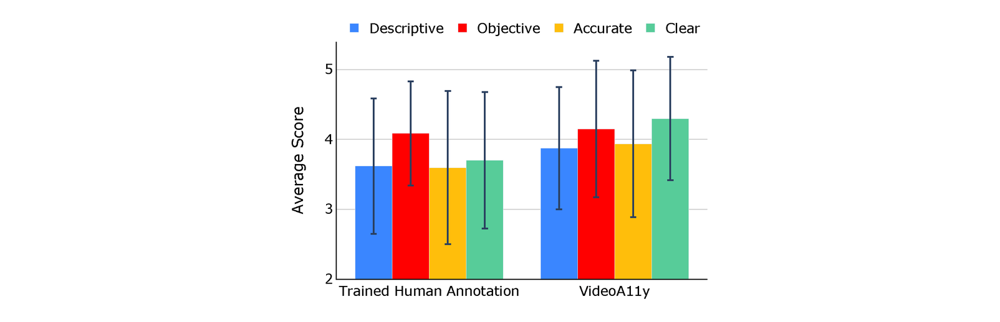

Video descriptions are crucial for blind and low vision (BLV) users to access visual content. However, current artificial intelligence models for generating descriptions often fall short due to limitations in the quality of human annotations within training datasets, resulting in descriptions that do not fully meet BLV users' needs. To address this gap, we introduce VideoA11y, an approach that leverages multimodal large language models (MLLMs) and video accessibility guidelines to generate descriptions specifically tailored for BLV individuals. Using this method, we have curated VideoA11y-40K, the largest and most comprehensive dataset of 40,000 videos described for BLV users. Rigorous experiments across 15 video categories, involving 347 sighted participants, 40 BLV participants, and seven professional audio describers, showed that descriptions generated by VideoA11y outperform original human annotations in clarity, accuracy, objectivity, descriptiveness, and user satisfaction. We evaluated models on VideoA11y-40K using both standard and custom metrics, demonstrating that MLLMs fine-tuned on this dataset produce high-quality accessible descriptions.
Introduction
New video content is created at an astounding rate, further widening the digital accessibility (a11y) gap experienced by blind and low vision (BLV) people. Video description, also known as audio description (AD), can make videos accessible to BLV users by narrating the visual content of a scene, such as actions, characters, scene changes, and interactions. For professionally created media, such as films and television shows, producing ADs requires significant collaborative efforts from a team of experts, including producers, audio description writers, voice actors, and audio engineers. Audio descriptions for movies have become more prevalent over the years, particularly in countries with strong accessibility regulations. However, smaller studios and independent films may not always provide AD. In contrast, for user-generated content, which has surged in popularity on platforms such as YouTube and TikTok, the implementation of ADs lags considerably behind. Given the rapid increase in online videos, human description alone is insufficient, making artificial intelligence (AI)-generated audio descriptions a viable alternative.
In recent years, advances in computer vision and natural language processing (NLP) have enabled the development of new techniques for automatically generating video descriptions using multimodal large language models (MLLMs). These models are typically trained on general video description datasets, which include videos paired with descriptions or annotations (in this paper, we use the terms `description' and `annotation' interchangeably) created by either humans or AI. However, existing datasets are insufficient for generating descriptions that effectively support BLV individuals in understanding video content. A key limitation is that the annotations in these datasets often contain errors and fail to adhere to AD guidelines for accessibility. Human-generated descriptions also tend to be brief and can occasionally contain grammatical, spelling, or semantic errors, which may limit the comprehension of the video for BLV audiences.
To address this gap, we introduce the VideoA11y method and the VideoA11y-40K dataset. VideoA11y is a novel approach designed to generate high-quality descriptions from scratch or enhance existing annotations for a wide range of video categories. It aims to produce detailed and accurate descriptions, thereby improving content accessibility for BLV users. To this end, we have compiled and summarized 42 guidelines from professional AD sources that capture the needs of BLV individuals. We then leveraged MLLMs to generate accessible descriptions using a prompt that adheres to these guidelines (i.e., compliant prompt). We used VideoA11y to curate VideoA11y-40K, the largest and most comprehensive video description dataset for training accessible models. The dataset includes 40,000 videos across 15 categories, all specifically described for BLV individuals.
We conducted five user studies with both sighted and BLV individuals. The results of these studies demonstrate that VideoA11y produces video descriptions of superior quality in all metrics. Finally, we developed a new video accessibility benchmark that uses VideoA11y-40K to evaluate open-source MLLMs on standard NLP metrics and the four custom metrics of descriptiveness, objectivity, accuracy, and clarity. We fine-tuned two open-source MLLMs on VideoA11y-40K and demonstrated that descriptions generated by these fine-tuned models outperform those produced by baseline models. Our work is pioneering in the HCI and AI community, focusing on creating a video description dataset specifically for BLV users and validating it with both sighted and BLV individuals. The novelty of this work lies in bridging established human practices of audio description with advancements in video description models, and in creating a method, dataset, and benchmark dedicated to video accessibility.
Development of VideoA11y
Overview
VideoA11y is designed to generate high-quality, accessible video descriptions using multimodal large language models (MLLMs) guided by accessibility-focused guidelines. At its core, the system relies on a set of 42 curated audio description (AD) guidelines that emphasize clarity, accuracy, and relevance, ensuring that descriptions meet the specific needs of blind and low-vision (BLV) users. These guidelines inform both the creation of the descriptions and the design of the evaluation metrics. The resulting descriptions are both comprehensive and well-structured, making them suitable for a wide range of video categories.
To assess and validate its effectiveness, VideoA11y was evaluated through extensive user studies involving sighted and BLV participants. These studies focused on key metrics such as descriptiveness, objectivity, accuracy, and clarity. Additionally, VideoA11y models were benchmarked against state-of-the-art AI models using both standard metrics like BLEU and custom metrics tailored to accessibility. Results consistently demonstrated that VideoA11y-produced descriptions outperform traditional human annotations and baseline AI models, establishing it as a robust and scalable framework for improving video accessibility.
Methodology
VideoA11y uses multimodal large language models (MLLMs) and curated audio description (AD) guidelines to create video descriptions tailored for BLV users. The method begins with extracting keyframes—significant moments in a video—using a luminance-based algorithm that identifies visual changes. These keyframes are processed by MLLMs like GPT-4 Vision, which generate or refine descriptions based on carefully crafted prompts adhering to 42 professional AD guidelines.
Imagine your role is to generate descriptions for videos to make them accessible to blind and low vision individuals. You will watch a sequence of keyframes from a video and read the current description of this video. Your task is to revise the current description. You must follow all the given instructions. Output your result in a dictionary format: {“Video_Category”: A string representing the category of video you believe it to be, “Revised_Desc”: A string of revised description.}
Current Description: {desc_current}
Instructions:
Instruction #1: Avoid over-describing — Do not include non-essential visual details.
Instruction #2: Description should not be opinionated unless content demands it.
Instruction #3: ...
The guidelines were distilled from 154 industry standards, prioritizing clarity, relevance, and objectivity. Prompts guide the MLLM to produce descriptions aligned with these standards, improving detail and accuracy while minimizing extraneous or biased content. Evaluations showed GPT-4 Vision as the optimal model for generating descriptions, laying the foundation for creating the VideoA11y-40K dataset.
Study 1
Study 1 evaluated the performance of VideoA11y using both open-source (Video-LLaVA) and proprietary (GPT-4 Vision) multimodal large language models (MLLMs). The goal was to determine which model best generates video descriptions adhering to curated AD guidelines. A dataset of 150 videos across 15 categories (e.g., sports, education) was used, and descriptions were generated under four conditions:
VideoA11y (LLaVA) w/o HA uses the compliant prompt and Video-LLaVA to generate video descriptions.
VideoA11y (LLaVA) uses the compliant prompt with human annotations and Video-LLaVA to generate video descriptions.
VideoA11y (GPT) w/o HA uses the compliant prompt and GPT-4V to generate video descriptions.
VideoA11y (GPT) uses the compliant prompt with human annotations and GPT-4V to generate video descriptions.
150 sighted participants rated the descriptions on clarity, descriptiveness, accuracy, and objectivity using a 5-point scale. The test reveals a significant effect of the description method. Pairwise comparisons indicate that VideoA11y (GPT) w/o HA and VideoA11y (GPT) significantly outperform both VideoA11y (LLaVA) w/o HA and VideoA11y (LLaVA) in all four metrics. The results also suggest that using human annotations as references can enhance the quality of descriptions, although not significantly. Based on these results, we selected GPT-4V as the MLLM and also incorporated the existing human annotations in creating the VideoA11y-40K dataset.
VideoA11y-40K Dataset
We employed VideoA11y (GPT) to generate high-quality video descriptions for the VideoA11y-40K dataset, which includes descriptions for 40,000 videos (32,000 training set, 4,000 validation set, and 4,000 test set) across 15 categories specifically tailored to BLV users. Each description averages 52 words, significantly longer and more detailed than those in traditional datasets, which average 20 words.
The dataset’s categories were validated by human reviewers, achieving 96% accuracy in classification. Its detailed and scalable nature makes VideoA11y-40K a valuable resource for training AI models to create accessible video content. By incorporating AD best practices, the dataset supports the development of systems capable of delivering meaningful video descriptions at scale.
Evaluating VideoA11y Method and VideoA11y-40K Dataset with Sighted and BLV Users
VideoA11y underwent rigorous testing with sighted and BLV participants. 347 novice sighted users and seven professional audio describes rated descriptions across clarity, descriptiveness, accuracy, and objectivity. Results showed that VideoA11y significantly outperformed novice human annotations and even matched or surpassed trained human describers. Among BLV users, VideoA11y’s impact was pronounced. In a study involving 40 participants across five video categories, over 90% preferred descriptions generated by VideoA11y. Participants praised its clarity, detailed synchronization with video events, and unbiased presentation. These results demonstrate that VideoA11y not only improves comprehension but also enhances the viewing experience for BLV individuals.
Study 2
Study 2 was designed to assess the quality of descriptions generated by VideoA11y compared to novice human annotations from existing datasets. The study also included a comparison with GPT-4 Vision-generated descriptions created using non-compliant prompts (i.e., prompts not following AD guidelines). The goal was to evaluate how well VideoA11y performs in terms of clarity, descriptiveness, accuracy, and objectivity.
The evaluation involved 150 new participants recruited through Amazon Mechanical Turk (MTurk). Each participant reviewed two videos and rated five types of descriptions for each video:
Human Annotation uses novice human annotations from the original datasets.
GPT-4V uses the non-compliant prompt to generate video descriptions.
GPT-4V w/ HA uses the non-compliant prompt with human annotations to generate video descriptions.
VideoA11y w/o HA uses the compliant prompt to generate video descriptions.
VideoA11y uses the compliant prompt with human annotations to generate video descriptions.
Participants rated each description on a 5-point scale across the four evaluation metrics. Results showed that VideoA11y significantly outperformed all other methods on all metrics, with ratings above 4.0 on clarity, descriptiveness, accuracy, and objectivity. VideoA11y without Human Annotations also performed exceptionally well, surpassing novice human annotations and GPT-4V-generated descriptions in all metrics. These results indicate the effectiveness of AD guidelines in improving description quality beyond novice human annotations.
Study 3
Study 3 evaluated the quality of VideoA11y descriptions compared to those created by trained human annotators. This study aimed to assess whether descriptions generated by VideoA11y could meet or exceed the standards of professional audio describers who followed curated AD guidelines.
A total of 47 videos were selected from YouTube, spanning a variety of categories such as sports, instructional content, and entertainment. These videos had an average duration of 4.92 minutes. A team of four accessibility researchers carefully crafted descriptions for these videos, adhering strictly to the 42 professional AD guidelines compiled for this project. These human-generated descriptions were then compared to descriptions created by VideoA11y using GPT-4 Vision.
0.05).">
To evaluate the descriptions, 47 sighted participants from Amazon Mechanical Turk (MTurk) were recruited. Each participant reviewed descriptions generated by both methods for the same video and rated them on four key metrics: descriptiveness, objectivity, accuracy, and clarity. The participants used a 5-point scale to provide their ratings.
Results showed that VideoA11y descriptions matched or exceeded the quality of trained human annotations in most metrics. Notably, VideoA11y outperformed trained human annotators on the clarity metric, with a statistically significant improvement (p = 0.004). Participants highlighted that VideoA11y descriptions were often clearer, better synchronized with the visual content, and provided unbiased and detailed accounts of the videos. These findings demonstrate that VideoA11y can generate video descriptions that rival professional standards, making it a valuable tool for scaling video accessibility without compromising quality.
Study 4
Study 4 evaluated the quality of VideoA11y descriptions compared to those created by trained human annotators, with assessments conducted by professional audio describers experienced in creating high-quality audio descriptions. The 47 videos from Study 3 were used. Descriptions generated by trained human annotators were compared to those produced by VideoA11y. Seven professional audio describers, each with over three years of paid experience, participated in the study, providing both quantitative and qualitative feedback. The experts rated both sets of descriptions on four metrics—descriptiveness, objectivity, accuracy, and clarity—using a 5-point scale. Additionally, they selected the better description for each video and provided reasons for their choices. A short interview followed to gather qualitative insights on the descriptions.
0.05).">
Results showed that the average ratings for VideoA11y descriptions exceeded those for trained human annotations across all four metrics, although no statistically significant differences were found (p>0.05), likely due to the small sample size. Medium to large effect sizes (0.459-0.640) for three metrics suggest practical importance in the differences. Moreover, professional describers preferred VideoA11y’s descriptions for 33 out of 47 videos, citing clarity, detailed accounts, and well-synchronized content as key advantages. These findings highlight VideoA11y’s potential to match or surpass professional standards, offering a scalable solution for video accessibility.
Study 5
Study 5 focused on evaluating the effectiveness of VideoA11y and its impact on video-watching
experience of blind and low vision (BLV) individuals. This study aimed to compare descriptions
generated by VideoA11y to novice human annotations and assess user preferences and satisfaction.
A total of 40 BLV participants were recruited, including six completely blind and 34 legally blind
individuals with varying degrees of visual impairment. Participants were divided into two groups of
20, with each group evaluating five videos across five categories: entertainment, how-to, sports,
pets and animals, and people and vlogs. For each video, participants experienced both human-generated
descriptions and VideoA11y-generated descriptions, presented in a counterbalanced order.
Participants rated the descriptions on a 10-point Likert scale across four metrics: descriptiveness,
objectivity, accuracy, and clarity. They also indicated their preferred description for each video
and provided feedback on why they made their choice. Descriptions were embedded into the videos as
audio, following best practices for accessibility.
The results were highly positive for VideoA11y. Participants preferred VideoA11y-generated descriptions
in over 90% of cases, with an overall selection rate of 180 out of 200 comparisons. VideoA11y achieved
significantly higher ratings than novice human annotations on all metrics. Comments from BLV participants
highlighted the clarity, detail, and alignment of VideoA11y descriptions with the visual content,
enhancing their understanding and enjoyment of the videos.
This study underscores the ability of VideoA11y to meet the unique needs of BLV users, providing accurate,
clear, and descriptive audio that enhances their accessibility to video content.
Technical Benchmarks
Overview of Benchmarking
We benchmarked the performance of SOTA open-source models as candidates for the MLLM in VideoA11y in generating accessible video descriptions. This involved two complementary evaluations: one benchmarking VideoA11y itself and another comparing models fine-tuned on the VideoA11y-40K dataset.
For benchmarking VideoA11y, we evaluated its ability to improve model performance across diverse architectures without any additional fine-tuning, highlighting its generalizability and immediate applicability. For benchmarking VideoA11y-40K, we compared fine-tuned models against SOTA open-source baselines using both standard and custom metrics, with the VideoA11y-40K descriptions serving as the ground truth. This choice is supported by the studies above with sighted and BLV users, which show that the quality of VideoA11y-40K descriptions surpasses even that of trained human annotations. All evaluations were conducted on the hold-out test set of VideoA11y-40K.
Baseline Models
Four SOTA open-source models were selected for comparison:
Video-LLaVA-7B
VILA1.5-40B
LLaVA-NeXT-Video-32B
LLaVA-OneVision-72B
Each model was evaluated under its original settings, including the number of frames processed and inference parameters. For the experiments, we generated video descriptions using each MLLM on the VideoA11y-40K test set, both with and without VideoA11y. These descriptions were then used to evaluate VideoA11y’s direct impact, and the fine-tuned models' performance on VideoA11y-40K.
Fine-Tuned Models
Two open-source models, Video-LLaVA-7B and LLaVA-NeXT-Video-32B, were fine-tuned on VideoA11y-40K. This involved LoRA fine-tuning, which adjusts specific model layers while preserving pre-trained knowledge. The fine-tuning process included:
10 epochs
Learning rate of 2e-5
Batch size of 4 per device
Support for up to 32,768 token lengths
The fine-tuned models were named VideoA11y-7B and VideoA11y-32B.
Evaluation Metrics
Evaluations were conducted using both standard NLP metrics and custom accessibility-focused metrics:
Standard Metrics: BLEU, METEOR, ROUGE, CIDEr, and SPICE, which assess text coherence, relevance, and alignment with human judgment.
Custom Metrics: Descriptiveness, objectivity, accuracy, and clarity, rated on a scale of 1–5. These metrics reflect the specific needs of BLV users.
Benchmarking VideoA11y
Baseline models with VideoA11y consistently outperformed baseline models without VideoA11y across all metrics. Key findings include:
Standard Metrics: SPICE demonstrates the most pronounced gains. This suggests that VideoA11y enables models to produce descriptions that are semantically closer to the ground truth, even when the exact wording differs.
Custom Metrics: VideoA11y yields significant improvements in the accurate and clear metrics, which are particularly impactful for BLV users. Enhanced accuracy ensures that descriptions faithfully capture the content of the video without introducing misleading or irrelevant information, while improved clarity provides well-structured and easily comprehensible descriptions.
Benchmarking VideoA11y-40K
Fine-tuned models consistently outperformed baseline models across all metrics. Key findings include:
Standard Metrics: VideoA11y-32B achieved the highest scores in BLEU, METEOR, CIDEr, and SPICE, followed by VideoA11y-7B. These models demonstrated improved semantic richness and alignment with ground truth.
Custom Metrics: Evaluations using GPT-4o as an evaluator showed that VideoA11y-32B achieved the highest ratings on descriptiveness, objectivity, accuracy, and clarity. VideoA11y-7B also performed well, surpassing baseline models.
Conclusion and Future Discussions
VideoA11y addresses a critical gap in video accessibility by leveraging advanced AI and professionally curated guidelines. Its scalable method and comprehensive dataset enable the creation of high-quality video descriptions tailored to BLV users. User evaluations confirmed its superior performance over human-generated descriptions, making it a transformative tool for inclusive content.
Future work will explore personalization, such as adapting descriptions to individual preferences and integrating inline descriptions that seamlessly fit video pacing. These advancements will ensure that VideoA11y continues to lead in video accessibility, creating a richer experience for BLV users and setting a new standard in inclusive technology.
Sample Videos
Below are a few videos from the VideoA11y-40K dataset with revised descriptions using VideoA11y.
Video #1
Video ID: FveaOFL7eOs
VideoA11y: A person in a white protective beekeeping suit
inspects a large rectangular honeycomb frame. The frame is mostly covered with a pattern
of hexagonal cells, some filled with honey, while others are empty. The beekeeper holds
the frame with both hands, examining it closely. Bees crawl across the surface, their
buzzing audible. Text on the screen questions the absence of eggs or larvae in the brood
chamber.
Video #2
Video ID: jjOqzXCwDec
VideoA11y: A tabby cat peeks through a small, square pet door
built into a glass patio door, then steps out onto a brick patio. The scene shifts to
the cat confidently striding towards the camera. Subsequent frames show the brand name
'SUREFLAP' in bold white letters on a blue background, followed by the slogan 'SureFlap
pets are happy pets' in white script.
Video #3
Video ID: ucaCmhNo78k
VideoA11y: The video demonstrates the preparation of a cheesy
hash brown casserole. The cook starts by greasing a clear glass baking dish. Cream of
chicken soup is poured into the dish, followed by the addition of melted margarine. The
cook then sprinkles shredded Colby cheese into the mixture. After each ingredient is
added, the cook mixes them thoroughly. Diced onions are scattered over the mixture,
seasoned with salt and black pepper, and stirred in. Finally, shredded hash browns are
combined with the rest of the ingredients. The cook ensures an even distribution of all
components before transferring the dish to the oven to bake until golden brown. The
finished casserole is served on a plate, showcasing a crispy golden top with a creamy,
cheesy interior.